| 1 | BLK-AZ-MENU-CREATE-INPUT | goto start screen | goto | | http://127.0.0.1:10095/AMB/AMA01.html | 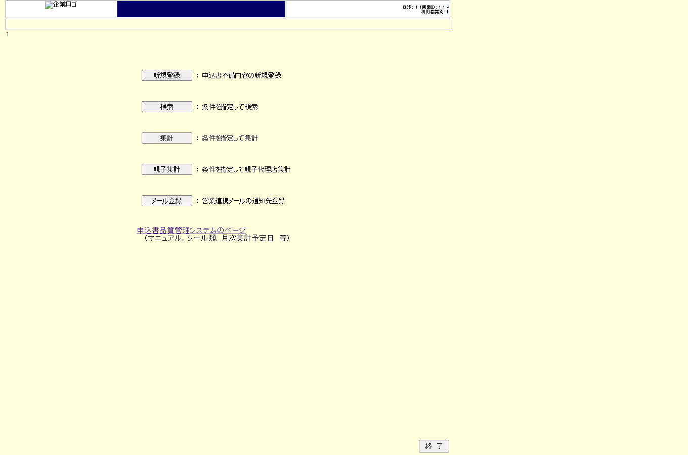 |
| 2 | BLK-AZ-MENU-CREATE-INPUT | click 新規登録 | click | #act001to100 | http://127.0.0.1:10095/AMB/AMA03.html |  |
| 3 | BLK-AZ-MENU-CREATE-INPUT | ast transition 不備内容入力画面-新規 | assert | #policy_number | http://127.0.0.1:10095/AMB/AMA03.html |  |
| 4 | BLK-AZ-INPUT-FILL | inputBundle 各項目 | fill | select[name="input_type_list.selected"] | http://127.0.0.1:10095/AMB/AMA03.html | |
| 5 | BLK-AZ-INPUT-FILL | inputBundle 各項目 | fill | select[name="large_item_list.selected"] | http://127.0.0.1:10095/AMB/AMA03.html | |
| 6 | BLK-AZ-INPUT-FILL | inputBundle 各項目 | fill | #policy_number | http://127.0.0.1:10095/AMB/AMA03.html | |
| 7 | BLK-AZ-INPUT-FILL | inputBundle 各項目 | fill | #sub_policy_number | http://127.0.0.1:10095/AMB/AMA03.html | 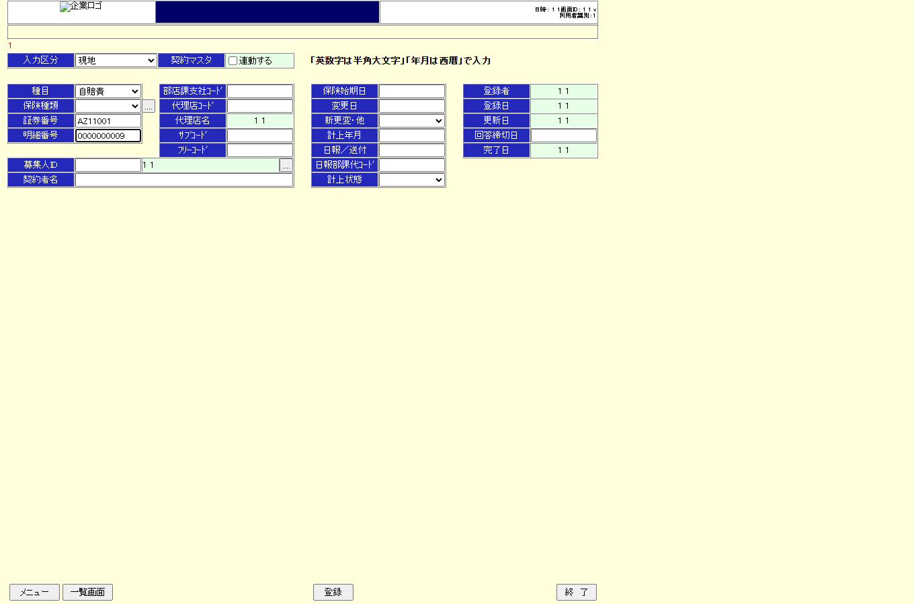 |
| 8 | BLK-AZ-INPUT-FILL | inputBundle 各項目 | fill | #section_code | http://127.0.0.1:10095/AMB/AMA03.html | |
| 9 | BLK-AZ-INPUT-FILL | inputBundle 各項目 | fill | #agent_code | http://127.0.0.1:10095/AMB/AMA03.html | |
| 10 | BLK-AZ-INPUT-FILL | inputBundle 各項目 | fill | #sub_agent_code | http://127.0.0.1:10095/AMB/AMA03.html | |
| 11 | BLK-AZ-INPUT-FILL | inputBundle 各項目 | fill | #free_code_1 | http://127.0.0.1:10095/AMB/AMA03.html | 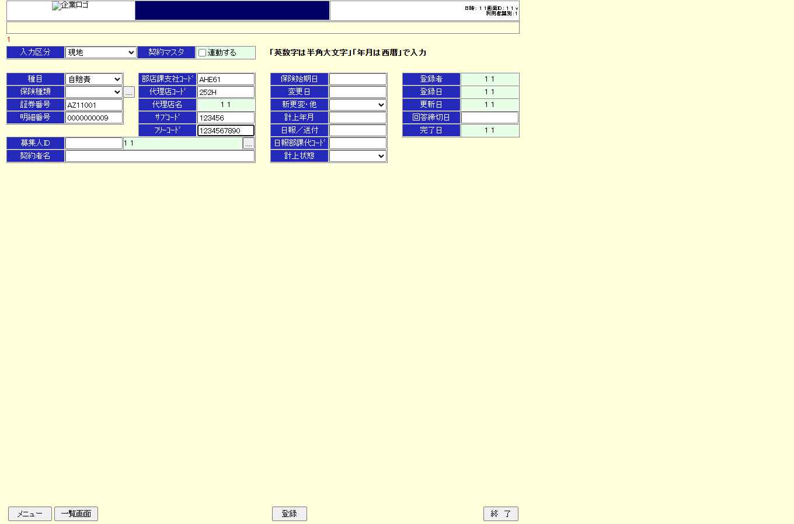 |
| 12 | BLK-AZ-INPUT-FILL | inputBundle 各項目 | fill | #insurant_name | http://127.0.0.1:10095/AMB/AMA03.html | |
| 13 | BLK-AZ-INPUT-FILL | inputBundle 各項目 | fill | #start_date | http://127.0.0.1:10095/AMB/AMA03.html | |
| 14 | BLK-AZ-INPUT-FILL | inputBundle 各項目 | fill | select[name="application_form_type_list.selected"] | http://127.0.0.1:10095/AMB/AMA03.html | |
| 15 | BLK-AZ-INPUT-FILL | inputBundle 各項目 | fill | #sumup_year_month | http://127.0.0.1:10095/AMB/AMA03.html | |
| 16 | BLK-AZ-INPUT-FILL | inputBundle 各項目 | fill | #daily_report_send | http://127.0.0.1:10095/AMB/AMA03.html | |
| 17 | BLK-AZ-INPUT-FILL | inputBundle 各項目 | fill | #sumup_section_code | http://127.0.0.1:10095/AMB/AMA03.html | |
| 18 | BLK-AZ-INPUT-FILL | inputBundle 各項目 | fill | select[name="sumup_status_list.selected"] | http://127.0.0.1:10095/AMB/AMA03.html | |
| 19 | BLK-AZ-INPUT-FILL | inputBundle 各項目 | fill | #reminder_date | http://127.0.0.1:10095/AMB/AMA03.html |  |
| 20 | BLK-AZ-INPUT-FILL | ast bundle 表示 | assert | #selected_input_type_code | http://127.0.0.1:10095/AMB/AMA03.html | |
| 21 | BLK-AZ-INSURANCE-SELECT | click (保険種類欄の横) | click | input[name="selectInsuransuItem"] | http://127.0.0.1:10095/AMB/AMA03.html | |
| 22 | BLK-AZ-INSURANCE-SELECT | ast 遷移 保険種類選択 | popup | | http://127.0.0.1:10095/AMB/AMA03.html |  |
| 23 | BLK-AZ-INSURANCE-SELECT | click 保険種類 | selectOptionByLabel | select[name="insurance_item_list.selected"] | http://127.0.0.1:10095/AMB/insurance_item_select.html | 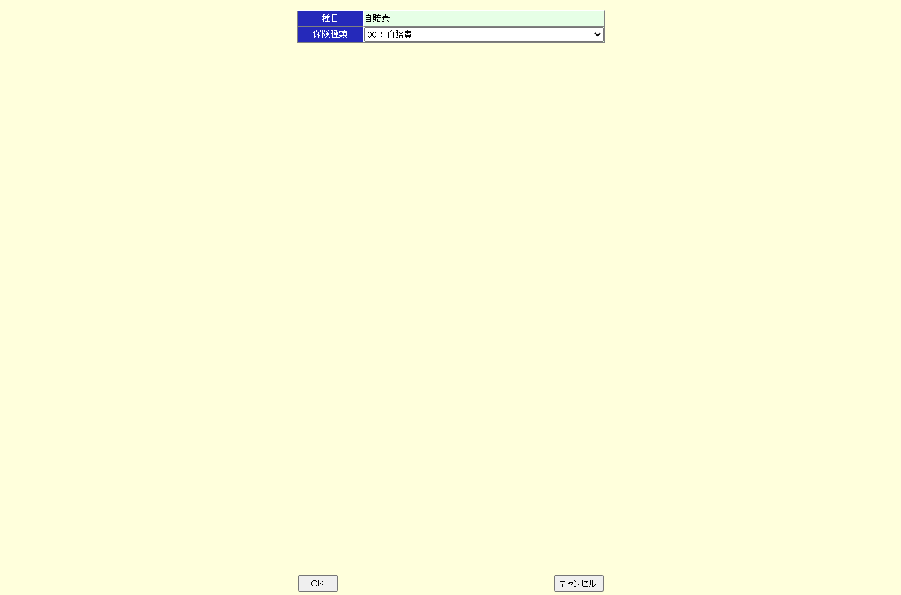 |
| 24 | BLK-AZ-INSURANCE-SELECT | click OK | click | input[name="ok"] | http://127.0.0.1:10095/AMB/insurance_item_select.html | — |
| 25 | BLK-AZ-INSURANCE-SELECT | ast 反映確認 | assert | #selected_insurance_item_code | http://127.0.0.1:10095/AMB/AMA03.html | |
| 26 | BLK-AZ-AGENT-SELECT | click (募集人ID欄の横) | click | input[name="selectFieldAgent"] | http://127.0.0.1:10095/AMB/AMA03.html | .png) |
| 27 | BLK-AZ-AGENT-SELECT | ast 遷移 募集人検索 | popup | | http://127.0.0.1:10095/AMB/AMA03.html | |
| 28 | BLK-AZ-AGENT-SELECT | input 部店課支社コード | fill | #section_code_key | http://127.0.0.1:10095/AMB/AMA18.html?1=AHE61&1=252H&1=&1=1&gamid=AMA18&gamcd=AMA00&hubsessid=1 | 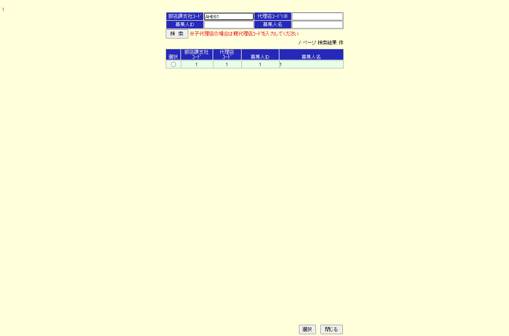 |
| 29 | BLK-AZ-AGENT-SELECT | input 代理店コード | fill | #agent_code_key | http://127.0.0.1:10095/AMB/AMA18.html?1=AHE61&1=252H&1=&1=1&gamid=AMA18&gamcd=AMA00&hubsessid=1 | 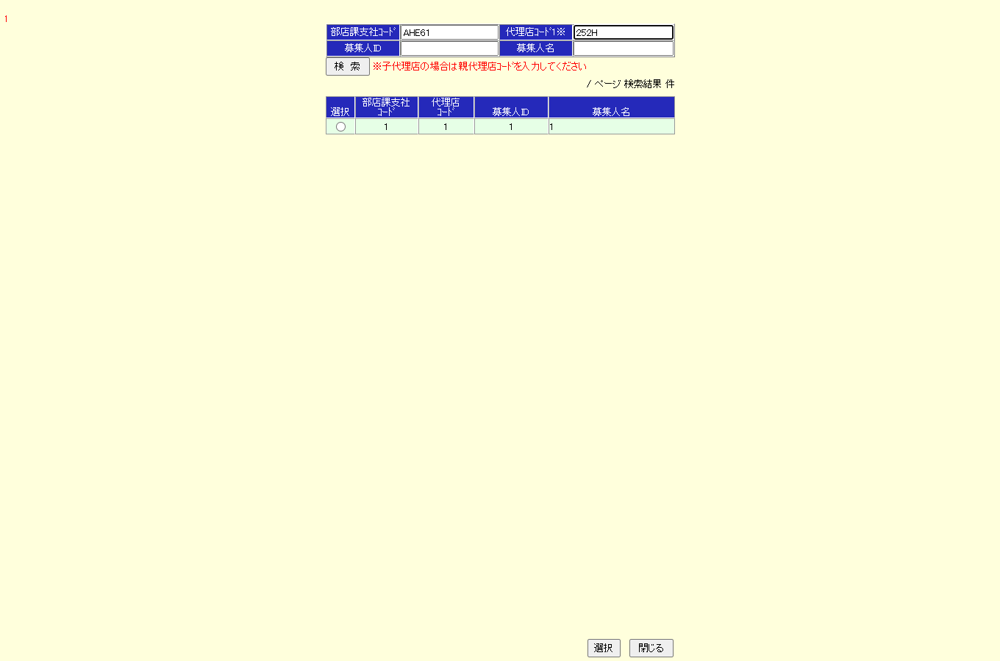 |
| 30 | BLK-AZ-AGENT-SELECT | input 募集人ID | fill | #field_agent_id_key | http://127.0.0.1:10095/AMB/AMA18.html?1=AHE61&1=252H&1=&1=1&gamid=AMA18&gamcd=AMA00&hubsessid=1 | 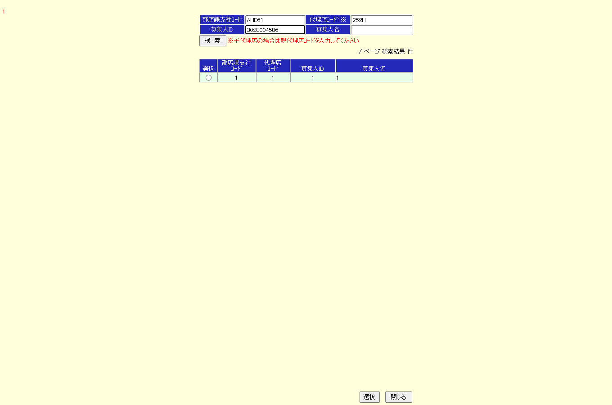 |
| 31 | BLK-AZ-AGENT-SELECT | click 検索 | click | #search | http://127.0.0.1:10095/AMA18/aZG905Search | 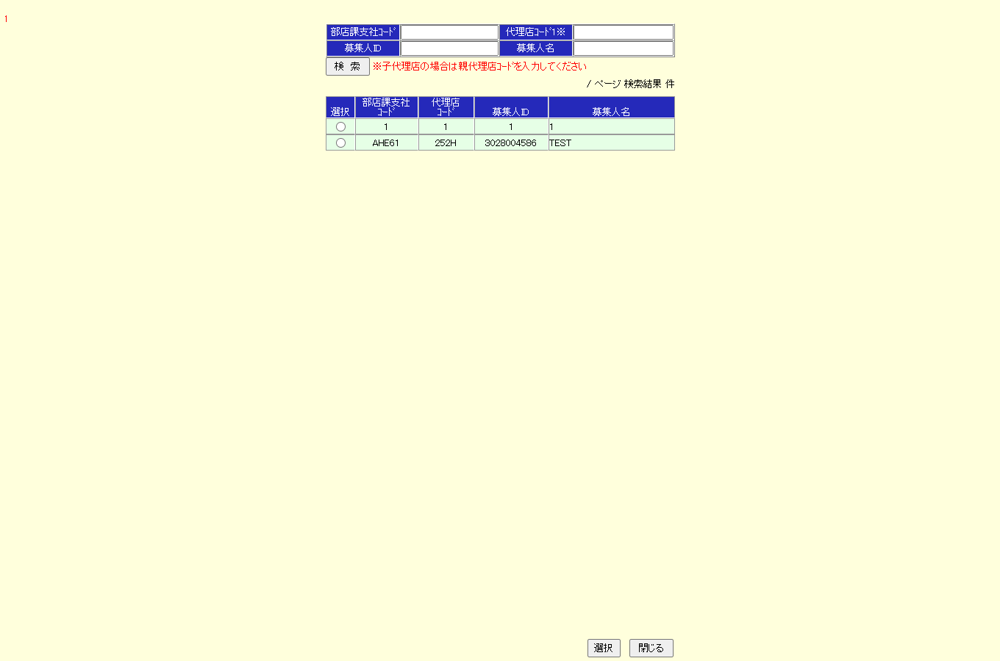 |
| 32 | BLK-AZ-AGENT-SELECT | ast 結果行 | assert | #gyoumu_list tr | http://127.0.0.1:10095/AMA18/aZG905Search |  |
| 33 | BLK-AZ-AGENT-SELECT | click 選択欄ラジオ | click | tr:has-text("{params.fieldAgentId}") input[type=radio] | http://127.0.0.1:10095/AMA18/aZG905Search | 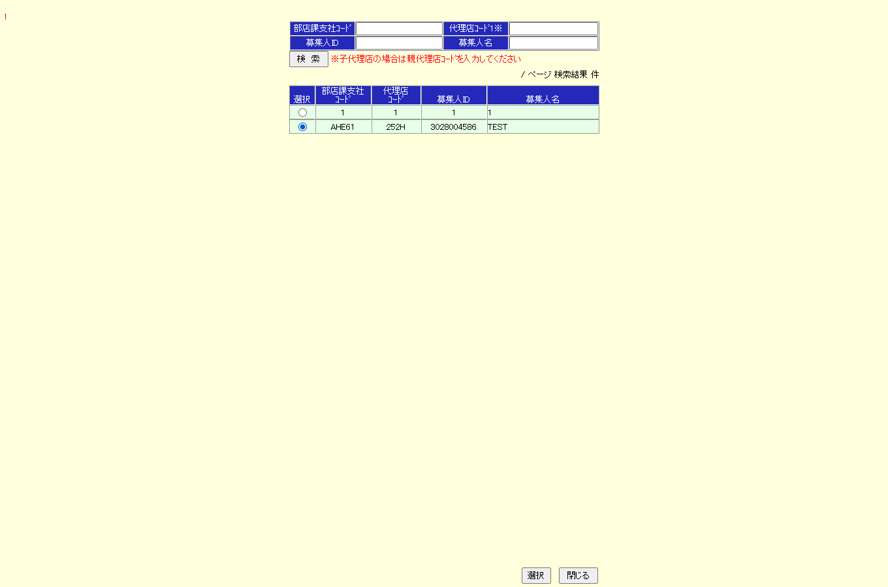 |
| 34 | BLK-AZ-AGENT-SELECT | click 選択 | click | input[name="closeSelect"] | http://127.0.0.1:10095/AMA18/aZG905Search | — |
| 35 | BLK-AZ-AGENT-SELECT | ast 反映確認 | assert | #field_agent_id | http://127.0.0.1:10095/AMB/AMA03.html | 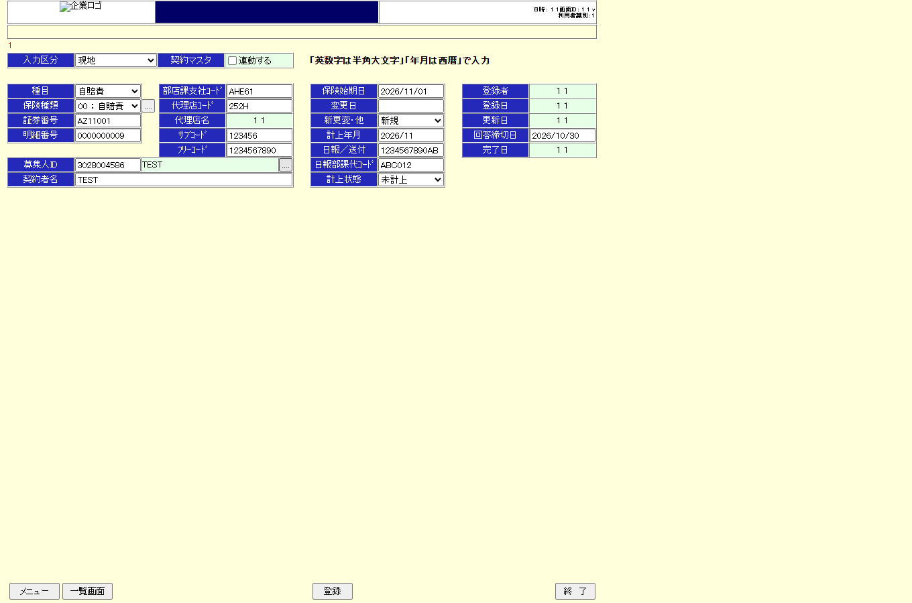 |
| 36 | BLK-AZ-REGISTER-UPDATE | click 登録 | click | #regist | http://127.0.0.1:10095/AMB/AMA04.html |  |
| 37 | BLK-AZ-REGISTER-UPDATE | ast 遷移 不備内容入力画面-更新 | assert | input[name="update"] | http://127.0.0.1:10095/AMB/AMA04.html |  |
| 38 | BLK-AZ-UPDATE-SEARCH-ITEM | click 検索 | click | input[name="imperfectSearch[0]"] | http://127.0.0.1:10095/AMB/AMA04.html |  |
| 39 | BLK-AZ-UPDATE-SEARCH-ITEM | ast 遷移 項目名検索 | popup | | http://127.0.0.1:10095/AMB/AMA04.html | |
| 40 | BLK-AZ-ITEM-SEARCH-SELECT | inputBundle 項目コード | fill | select[name="field_list.selected"] | http://127.0.0.1:10095/AMB/AMA13.html | 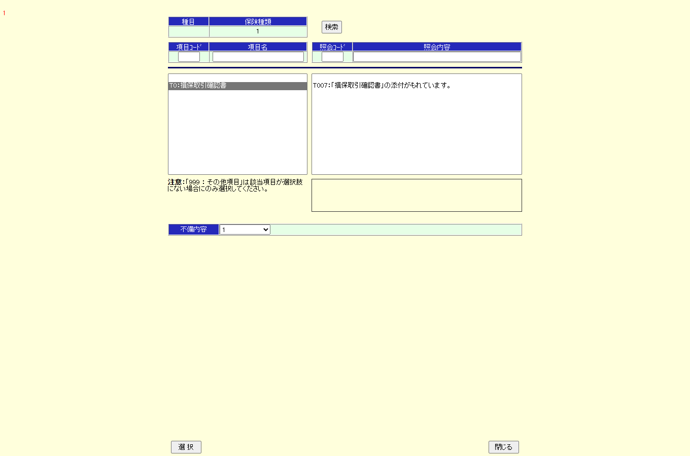 |
| 41 | BLK-AZ-ITEM-SEARCH-SELECT | click 検索 | click | input[name="search"] | http://127.0.0.1:10095/AMA13/aZG900Search |  |
| 42 | BLK-AZ-ITEM-SEARCH-SELECT | ast 検索結果 | assert | select[name="field_list.selected"] option | http://127.0.0.1:10095/AMA13/aZG900Search |  |
| 43 | BLK-AZ-ITEM-SEARCH-SELECT | click 選択 | click | input[name="select"] | http://127.0.0.1:10095/AMB/AMA13.html | 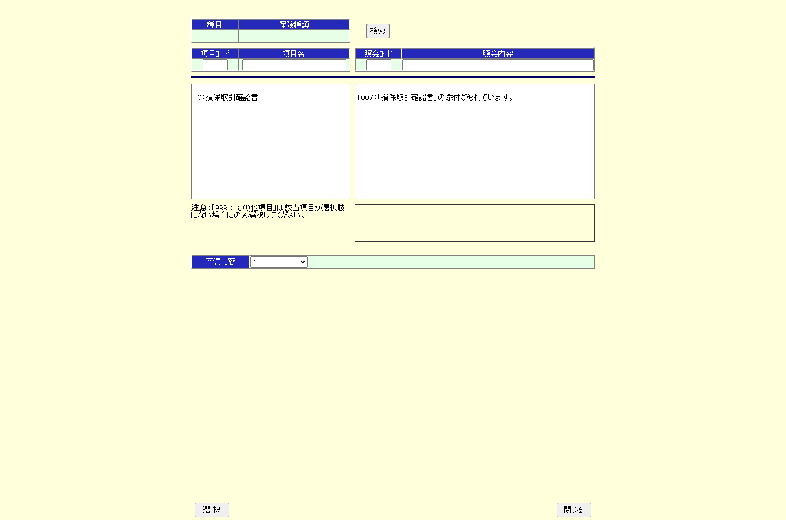 |
| 44 | BLK-AZ-ITEM-SEARCH-SELECT | ast 遷移 更新画面 | assert | input[name="update"] | http://127.0.0.1:10095/AMB/AMA04.html |  |
| 45 | BLK-AZ-INQUIRY-EDIT | click 照会内容チェックボックス | check | input[name="list[0].inquiry_contents_edit_flag"] | http://127.0.0.1:10095/AMB/AMA04.html | |
| 46 | BLK-AZ-INQUIRY-EDIT | enable 修 | enable | input[name="editInquiryContents[0]"] | http://127.0.0.1:10095/AMB/AMA04.html | |
| 47 | BLK-AZ-INQUIRY-EDIT | click 修 | click | input[name="editInquiryContents[0]"] | http://127.0.0.1:10095/AMB/AMA04.html |  |
| 48 | BLK-AZ-INQUIRY-EDIT | ast 遷移 照会内容編集 | popup | | http://127.0.0.1:10095/AMB/AMA04.html | |
| 49 | BLK-AZ-INQUIRY-EDIT | inputBundle 各項目 | fill | textarea | http://127.0.0.1:10095/AMB/AMA15.html | 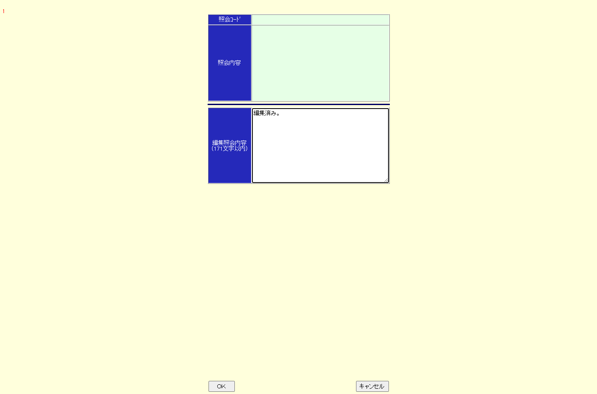 |
| 50 | BLK-AZ-INQUIRY-EDIT | click OK | click | input[name="ok"], input[value=" ＯＫ "] | http://127.0.0.1:10095/AMB/AMA15.html | 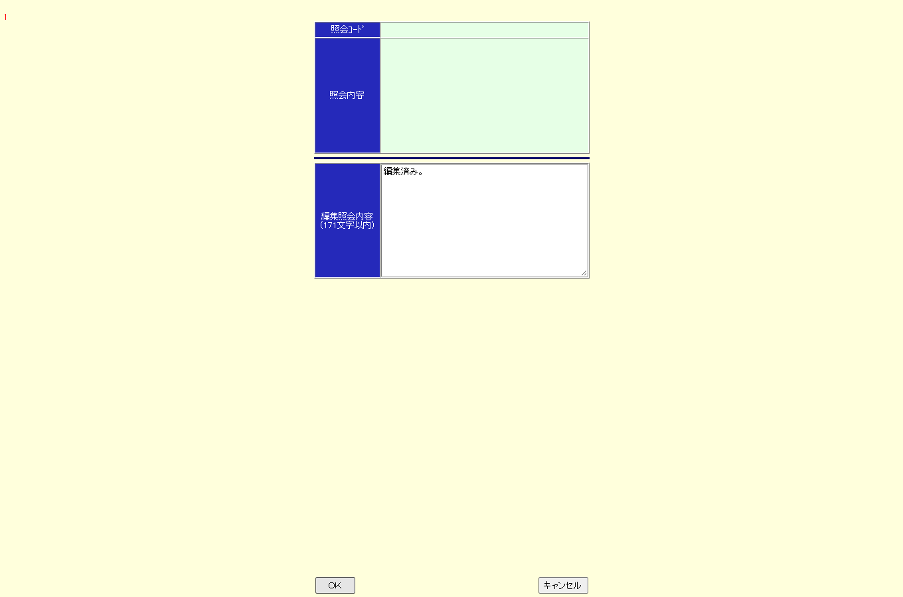 |
| 51 | BLK-AZ-INQUIRY-EDIT | ast 反映確認 | assert | input[name="update"] | http://127.0.0.1:10095/AMB/AMA04.html |  |
| 52 | BLK-AZ-CORRECTION-CONFIRM | click 訂正内容確認書 | click | input[name="act101to906"] | http://127.0.0.1:10095/AMB/AMA04.html | 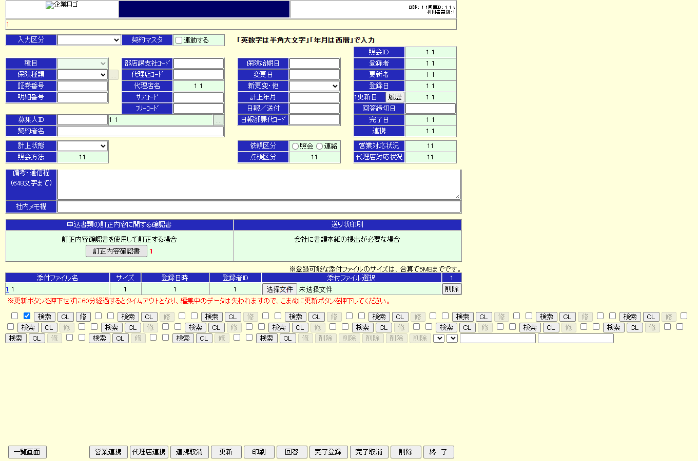 |
| 53 | BLK-AZ-CORRECTION-CONFIRM | ast 遷移 訂正内容確認 | popup | | http://127.0.0.1:10095/AMB/AMA04.html |  |
| 54 | BLK-AZ-CORRECTION-CONFIRM | input 確認者 | fill | input[name="confirm_user_name"] | http://127.0.0.1:10095/AMB/AMA19.html | |
| 55 | BLK-AZ-CORRECTION-CONFIRM | input 確認相手 | fill | input[name="confirm_target_name"] | http://127.0.0.1:10095/AMB/AMA19.html | 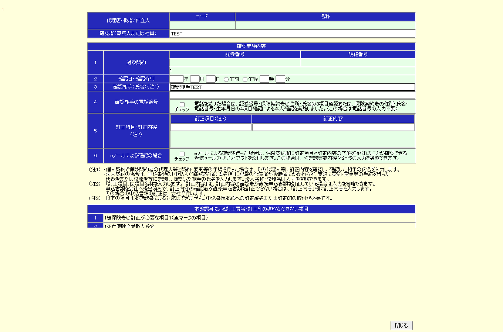 |
| 56 | BLK-AZ-CORRECTION-CONFIRM | click 登録 | click | input[name="regist"] | http://127.0.0.1:10095/AMB/AMA19.html | 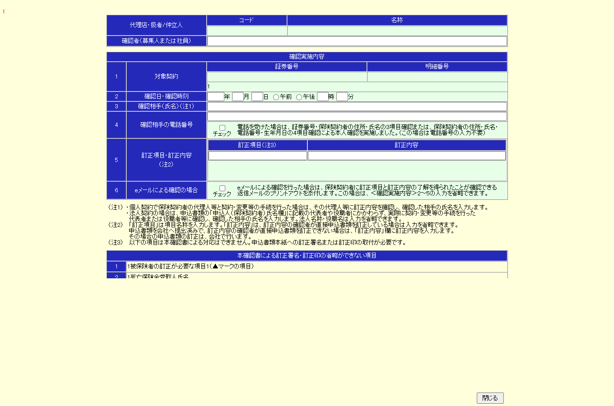 |
| 57 | BLK-AZ-CORRECTION-CONFIRM | ast 遷移 更新画面 | assert | input[name="update"] | http://127.0.0.1:10095/AMB/AMA04.html |  |
| 58 | BLK-AZ-COMPLETE-REGISTER | click 完了登録 | click | input[name="updateCompleteDate"] | http://127.0.0.1:10095/AMB/AMA04.html |  |
| 59 | BLK-AZ-COMPLETE-REGISTER | ast エラーメッセージ MAZG101W047 | assert | body | http://127.0.0.1:10095/AMB/AMA04.html |  |
| 60 | BLK-AZ-COMPLETE-REGISTER | click 更新 | click | input[name="update"] | http://127.0.0.1:10095/AMB/AMA04.html | 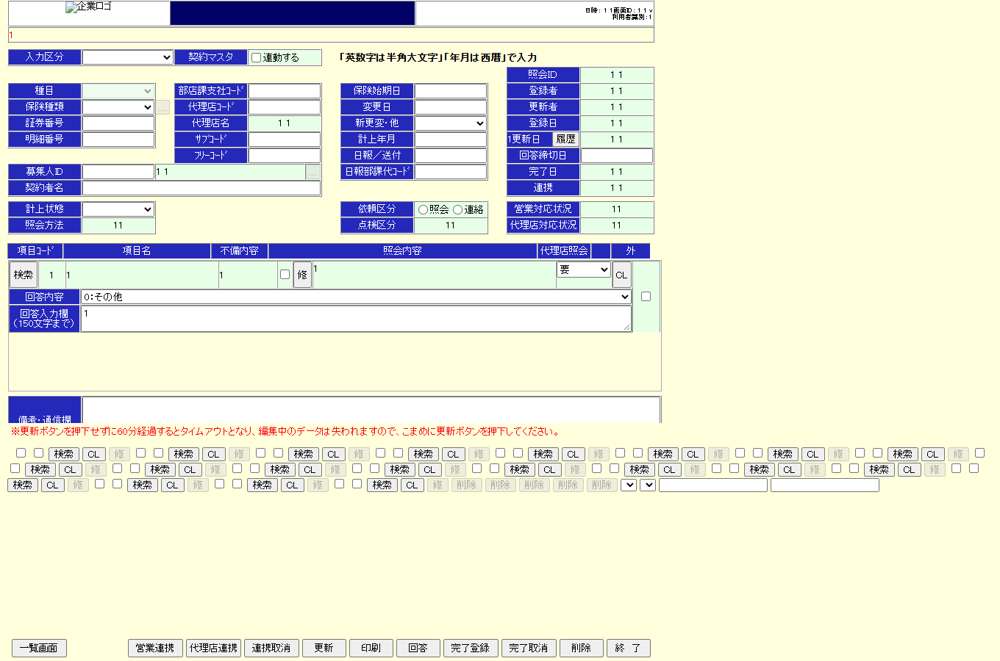 |
| 61 | BLK-AZ-COMPLETE-REGISTER | ast 営業対応状況 未対応 | assert | input[name="update"] | http://127.0.0.1:10095/AMB/AMA04.html | 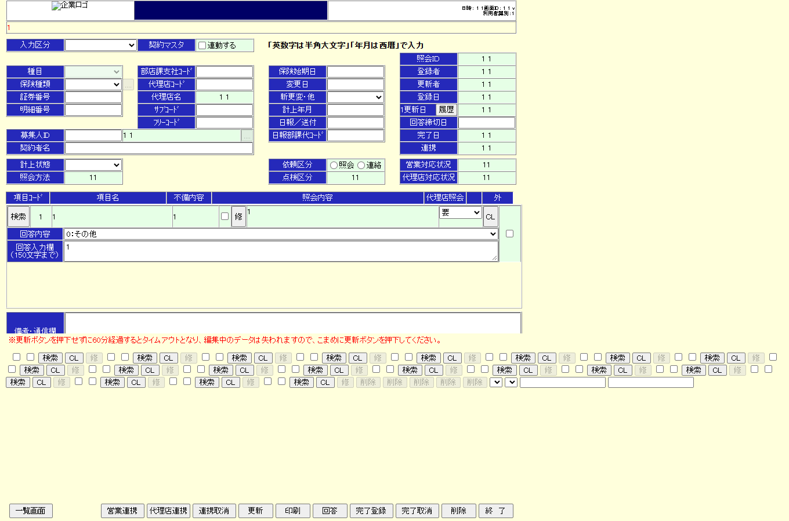 |


.png){kind=link}